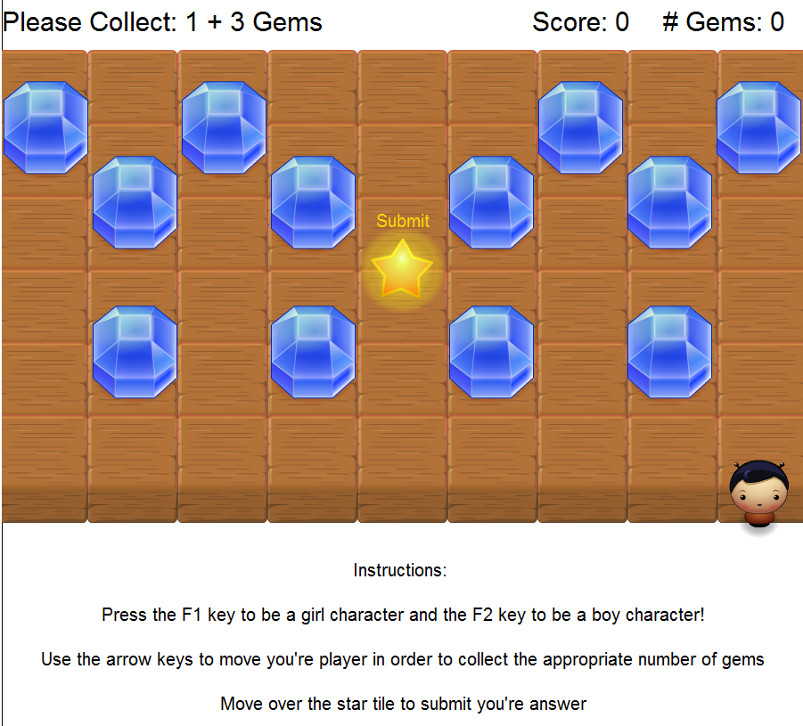

Welcome to Math Adventures
Do you struggle with solving basic math problems?! Well fear not, you're not alone! In fact some of the smartest people in the world can't do basic arithmetic. Say goodbye to boring flashcards and hello to a new fun innovative way to learn basic arithmetic!
Authors
Rajia Abdelaziz (@rajiaxoxo) and Jeremy Daigneau (@jDaigneau)
Overview
Math Adventures is a game designed for children (and adults!) who would like to practice basic arithmetic. The game allows users to select a character and then move over tiles to collect a specific number of gems that solve the basic arithmetic problem. If users collect the correct number of gems, they are awarded points!

Concepts Demonstrated
*The begin special form was used to allow expressions to be evaluated in sequence and to return the value of the final expression. One example of begin being used is when a character is on a gem. begin is used in this scenario to first increment the count of gems collected and then to evaluate another expression that removes the gem from the tile.
*set! was used to change the values of predefined variables. For instance, set! was used in the placeChar function to set the player to a girl or boy depending on whether the random value generated was a 0 or 1.
*A list was used to represent the problems. This list (called list-of-problems) contains sub-lists each of which contains 2 numbers representing the operands in the arithmetic problem.
*Car, Cdr, Cadrs...Etc/Recursion was used through out the program. One instance it was used is in a function called set-operand-for-new-problem. This procedure takes 3 parameters: a list of problems, a counter representing what problem is currently being displayed and a problem number to display. The function checks to see if the count is equal to the problem number and if it is not it recursively calls itself with an incremented count and the cdr of the list. If the count is equal to the problem number, then we use set to set operand 1 equal to (car (car lst)) and operand 2 equal to (car (cdr (car lst))).
*OOP and Counters were also demonstrated through out the program as explained above.
*Conditionals / If Statements were also used through out the program to determine outcomes of certain scenarios and to check if users were on a gem. If statements were used to check if the number of gems collected was equal to the solution of the problem. Not only that, but conditionals were used to check if the user's character was at the end of the map so that characters do not move off the board.
External Technology and Libraries
The libraries we used included:
2htdp/image https://docs.racket-lang.org/teachpack/2htdpimage.html
2htdp/planetcute: https://docs.racket-lang.org/teachpack/2htdpPlanet_Cute_Images.html
2htdp/universe: https://docs.racket-lang.org/teachpack/2htdpuniverse.html
The image library was used to format the tiles. Tiles are overlayed so that they appear next to each other. Planecute was the graphical library and provided the character, tile, gem and remaining images. The universe library was used for movement and many of the other game aspects.
Favorite Scheme Expressions
Rajia
Rajia's favorite part of this project was creating the list-of problems and writing a procedure to change the operands. The procedure, set-operands-for-new-problem is called when the user submits a problem. It is used to change the operands in order to create a new problem. The reason Rajia really liked this snippet of code is because it demonstrated a lot of valuable principles learned through out the semester. At first, Rajia did not feel comfortable with manipulating lists and finding values inside of them. However, writing this procedure showed that all the extra time she spent practicing manipulating lists was time well spent! This snippet of code uses recursion, counters, conditionals, car , cdr and the = operator.
;; A list of the problems currently created
(define list-of-problems '(
(1 3) ;; Problem 1
(3 2) ;; Problem 2
(2 2) ;; Problem 3
(4 0) ;; Problem 4
(1 2) ;; Problem 5
)
)
;; Originally the game starts on problem 1
(define prob-number-counter 1)
;; Procedure to change the operands of the problem
;; This procedure takes three parameters: the lst of problems, the current problem counter, and the problem number to be displayed
(define (set-operands-for-new-problem lst count problemnumber)
(if (= count problemnumber)
(begin
(set-operand1 (car (car lst)))
(set-operand2 (car (cdr (car lst))))
)
(set-operands-for-new-problem (cdr lst) (+ count 1) problemnumber)
)
)Jeremy
Jeremy's favorite part of the project was creating the movement for the character. This comes from the 2htdp/universe library and allows certain events to be bound to keyboard input. First, it checks if the player is on the submit tile, in which case the submitCollsion function would be called. Then it would check if the player is on the same tile as a gem, in which case the player's gem count will increase by one. In both cases, the players coordinates would change depending on which key is pressed. If neither of these cases occur, then only the coordinates will change. There is also a count that keeps the player within the boundaries of the game window.
(define (change w a-key)
(cond
[(key=? a-key "left") (cond ((= player1leftCount 8))
((and (= (- player1X 100) starX) (= player1Y starY)) (begin (set! player1rightCount (- player1rightCount 1)) (set! player1leftCount (+ player1leftCount 1)) (set! player1X (- player1X 100)) )(submitCollision))
((and (= (- player1X 100) gemX) (= player1Y gemY))(begin (set! gemCount (+ gemCount 1)) (set! gemX -500) (set! gemY -500) (set! player1rightCount (- player1rightCount 1)) (set! player1leftCount (+ player1leftCount 1)) (set! player1X (- player1X 100)) ))...
Additional Remarks
Jeremy and Rajia both really enjoyed getting to create this project and feel as though it definitely helped solidify their understanding of the concepts learned through out the semester.
How to Download and Run
To run the game, please download the file from: https://github.com/oplS16projects/Mathletes/blob/master/Mathletes.rkt.
After you run the .rkt program, press the f1 key as many times as you'd like to randomly change you're character's gender! Next, use the arrow keys to move you're player. Collect the appropriate number of gems that properly solves the arithmetic problem. Finally, move over the star tile to submit you're answer. If the answer is correct, points will be added to you're score. Otherwise zero points will be awarded. Continue solving math problems until you feel confident with you're math skills!